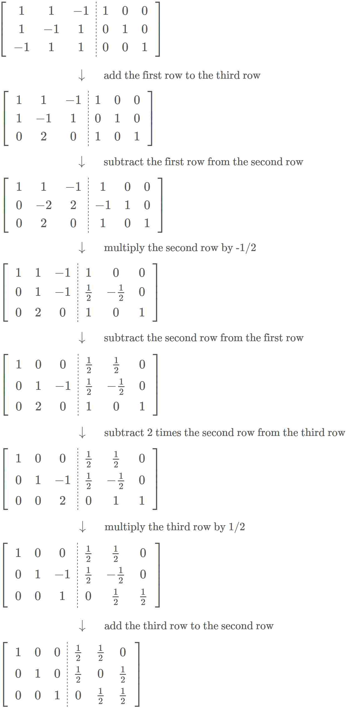

The alternative method to get the prepared files is to enter these commands in the EGTAPI terminal:
(1) mkdir ~/cs255/pj10
(2) cp /home/cs255001/Handouts/pj10/* ~/cs255/pj10
|
|
The Gauss-Jordan algorithm was discussed in Math 221 (Linear Algebra) - click on this link and see the example 2.4.4 on page 84 of the Math 221 text book: click here
To help you do this project, I have provided:
|
|
cd ~/cs255/pj10 gcc -o test1 -DN=3 test1.c helper.c inverse.c test1 |
cd ~/cs255/pj10 gcc -o test2 -DN=3 test2.c helper.c inverse.c test2 |
cd ~/cs255/pj10
gcc -o test3 -DN=7 test3.c helper.c inverse.c
test3
|
Given matrix A
A-1 is the inverse of matrix A if and only if:
A*A-1 = I
where I = the identity matrix
|
Example:
+- -+
| 7 2 1 |
A = | 0 3 -1 |
| -3 4 -2 |
+- -+
|
|
Here is another example:

The test program test2.c
will invert the above matrix.
I.e.: your code
will perform these steps in the
matrix inversing operation !
(Therefore, you can use printf statements in you code to print the partial result computed by your algorithm out to check if your algorithm is performing the steps correctly !)
Note: if you used printf calls, then you must remove the printf statements from your code before you turn the project in !!!
(In EGTAPI, select: File Browser, Turnin, click on the file inverse.c use the turn in code: pj10)
You can also use the turnin command (executed while you're in your cs255 directory)
Open the Terminal in EGTAPI and type in these command:
cd ~/cs255/pj10
/home/cs255001/turnin inverse.c pj10 // If you're in section 1
or
/home/cs255002/turnin inverse.c pj10 // If you're in section 2
|
Open the Terminal in EGTAPI and type in this command to request an extenstion for pj10:
/home/cs255001/req-ext pj10 // If you're in section 1
or
/home/cs255002/req-ext pj10 // If you're in section 2
|
You request will be successful if you have not exceeded the maximum number of "free" (no-questions-asked) requests allowed